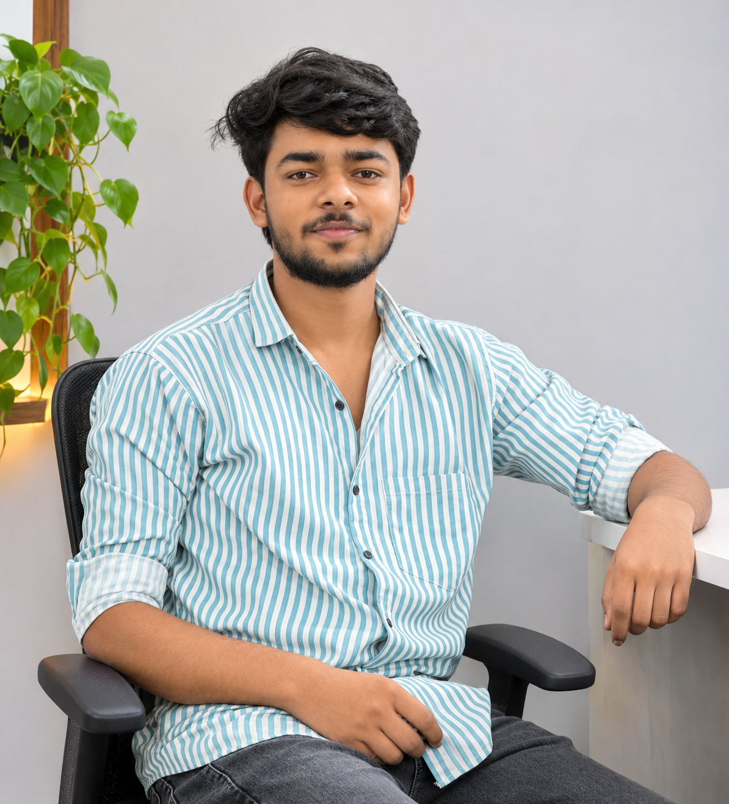

Learning by doing.
Growing with every build.
I'm Omprakash Vishwakarma, a Computer Science student and PHP developer apprentice focused on building useful web applications.

My path into web development has grown through formal study, hands-on practice and a steady curiosity about how digital products are made. I completed a Diploma in Computer Science and continued my studies through B.Tech lateral entry.
Alongside my studies, I’m developing practical skills in PHP and MySQL at DigiCoders Technology in Lucknow. I work across the basics of frontend development too, using HTML, CSS and JavaScript to build the interface around an application.
I prefer learning through projects: planning a feature, writing the code, finding what breaks and improving the result. That process has shaped the way I approach development so far.
“The best way I learn a technology is to put it to work on something real.”
Building a strong
development foundation.
My current focus is backend development with Core PHP and MySQL — understanding how data moves through an application, how user sessions work and how features fit together.
I’m also strengthening my frontend knowledge with HTML5, CSS3, JavaScript, Bootstrap and React.js. Laravel is the next step I’m actively learning within the PHP ecosystem.
Over time, I want to contribute to real-world development teams, take responsibility for useful features and keep growing through practical work.
See my technical skills ↗Learning, step
by step.
High School
School name and completion year to be added.
Computer Science & Engineering
Mahamaya Polytechnic of Information Technology
Computer Science & Engineering
Apollo Institute of Technology, Kanpur · Lateral entry
Good work comes
from curiosity.
I’m looking forward to learning from experienced developers, contributing to practical projects and turning more ideas into working applications.